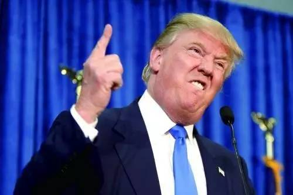

北京时间11月9日下午4点左右，美国大选投票结果出炉，被戏称为“疯子”的共和党总统候选人特朗普击败对手希拉里，将成为白宫的新主人。特朗普在随后于纽约发表的获胜演讲中称，他将成为“最开明、最好的”美国总统，承诺将让美国人民的收入翻倍，并让美国拥有“世界上最好的经济”。
面对各种媒体铺天盖地的报道，不明觉厉的吃瓜群众们或许又一次凌乱了：美国人选个总统咋这么闹腾？ 川普到底是谁啊？怎么就突然成为下一位美国总统了呢？这位叫川普的兄弟当了美帝的总统关我啥事吗？
那么我就当个搬运工，帮大家伙网罗了几乎所有靠谱信息来回答上面这些问题，文章不长不短，看完之后，你再和小伙伴们谈起这个话题的时候，肯定可以显得是个老司机。
美国选举制度
很多人可能一直听说美国总统的选举采用的是「选举人」制度，从形式上看，每一个合法的选民都会参与投票，然而实际上这是一种由「选举人」间接选举总统的方式，而不是直接选举。
美国全部「选举人票」一共是538张，其中参议院「100名」、众议员「435名」、华盛顿特区代表「3名」。参议员按州分配，50个州每州2名；众议员则按照人口分配，大约50万人选出1名。例如，纽约州人口1600多万，有31名众议员，加上两名参议员，共有33张选举人票。
并且，按照选举人票制度，除了缅因州、内布拉斯加州外，任何一个总统候选人赢得了这个州的多数人投票，就算赢得了这个州的所有选举人票，这就是所谓的「赢者通吃」。
候选人在所有州赢得的选举人票累计超过538的一半「270票」，就当选总统。根据这样的计算方式，会出现候选人赢得了按人头算的全国普选票，却因为选举人票没有过半而输掉大选。
美国共和党和民主党执政理念的区别
「民主党(Republic) 」
又称「 左派 」、 「自由派 」、 「鸽派 」，象征是驴子。代表中产阶层和贫民阶层，城市力量较强。主要支持者是工会和知识分子，以及社会边缘化势力如移民、女权主义、少数族群、同性恋团体等。政治上， 民主党重视内政、环境保护、健康保险与社会福利、教育等领域。
「 共和党(Democrats) 」
又称 「右派 」、 「保守派 」、 「鹰派 」，象征是大象。代表资产阶层和社会保守势力，在乡村特别是南方力量强大。主要支持者有宗教组织、大企业、退伍军人、白人特别是男性白人。政策上，共和党支持商界，削减政府规模开支和福利计划，但保证军力，与民主党对立——后者强调政府投资同时削减军队把钱用于国内。共和党比较偏重外交，特别是动用军力干涉国际事物。
主从下图可以看出两个党派在主要政策主张上的区别：
川普其人
川普给人的第一印象是：这家伙，太不靠谱了！
此前很多主流媒体在描述川普其人时，用的都是这些语言：胡说八道的卑鄙小人、哗众取宠的演员、通过破产赖账，轻视妇女和有色人种，反对移民，有种族主义倾向……
甚至连发型也经常成为人们嘲讽的话题：
更是在很多公开场合语出惊人：
-我要在墨西哥边境修一道1300英里的墙，而且这钱要让墨西哥出。

-与恐怖主义有关的国家，我要停止他们的移民！
-我要让美国退出WTO！
-伊万卡非常漂亮，如果她不是我女儿的话，我可能会追她。
-我有好多钱，比他们的钱加一块都多，比他们那些骗人的捐款加起来都多，但我就是想做我自己。
所以从一开始，很多人都把他当作是一个跳梁小丑。
然而仔细看过川普的资料后，会发现，川普其实挺靠谱的。
川普，很多人说他是富二代，其实相比很多真正的富二代，他顶多也只能算是中产阶级二代的，他的老爸是一个在类似于崇明岛这样的地方改建房子的小工头。川普从小有大志向，说，老爸，你也太没理想了，我要做有理想有抱负的好青年，一定要打进南京路和陆家嘴，从此以后他就在世界最繁华的地区盖房子。
川普成名是参与了黄赌毒、脏乱差城市纽约的复兴工作。将世界犯罪之都纽约变成美国最受人喜欢的大都市的是铁腕市长朱利安尼，而把破旧街区改建成漂亮大厦的是川普。
川普一生离过两次婚，先后三个太太两个是移民，因此川普本身并不反对移民，而是反对非法移民。
他的话常常充满了矛盾，一边说中国人抢了我们的工作，一边说中国人很好，买了我很多房子。中国很多人知道川普，是因为他有一个白富美的女儿伊万卡，伊万卡可是大美人，而且高智商，高情商，高学历，事业有成。因此，当希拉里女儿雀儿喜主持餐会为老妈拉票时，餐会的票从五千块降到100块还陪合影，大家都不去，大家说，如果伊万卡出面召集吃饭为老爸拉票，我们一定去，如果能合影，陶一万块也愿意，可见两个候选人的女儿魅力相差之大。
川普的破产，就与伊万卡的老妈有关，当初川普离婚，付不出赡养费，只好宣布破产，不过川普对工人很好，没有解雇工人。川普曾经帮助过和他八杆子打不着的穷人，因此并非冷血的人。
川普虽然是共和党的，奥巴马的白宫餐会他也花钱去，到了会上川普就唠叨奥巴马不是在美国出生的，逼着后者拿出出身证。奥巴马很没有风度，后来找到出身证（不知道是真是假）后，当众狠狠把川普奚落了一通。川普在白宫现了大眼，苦笑之后决定从政。2014年他本来要竞选纽约州参议员，但是大概是没准备好，半道退缩了，但是说他有更大的动作，大家以为他开玩笑，说他是胆小鬼，谁能想到两年后真的搞了个大的。
他在竞选中号称上台后还要搞出下面这些大事：
为什么是川普？
川普的理念代表了当今世界的「大势所趋」：保守主义和孤立主义
川普支持者的标签：白人 工人 小企业主 低学历者 中老年人
这批人的特点：经济全球化的失意者
从选情地图上可以明显的看出，东西海岸跨国资本的聚集地，是希拉里的支持者，而中部的工农大洲则是川普的票仓。
正好对比英国脱欧公投，留欧派主要也是集中在伦敦及其周边的跨国资本集中地，还有背面苏格兰的重要工业区也是在欧洲一体化中受益的。
那些不富裕的地区，往往认为全球化是自己利益的破坏者，钱都被上层精英集团弄走了，自己还要面对国外廉价产品摧毁本地小作坊、小品牌、小工厂所带来的负面影响；工作机会甚至也被工资要求低、没啥社会福利需求、又肯吃苦加班的第三世界人民抢走；还要经常承受大量外来者可能引发的环境、治安等难题。
归根到底，还是资本主义无法解决其根本矛盾，贫富差距、两极分化。长期的利益分配不均，必然会导致民意的反弹。在这种思潮和背景下，孤立主义、保守主义再次抬头。
希拉里代表了美国精英主义，获得了华尔街、政坛、商界精英的力挺，却失去了底层“沉默大多数”的支持。而特朗普作为电视明星，非常善于把握底层“沉默大多数”的诉求（类似我们的网络大V），比如批评低利率政策、主张缩减政府开支、加大财政刺激、加强贸易保护、反全球化、反对非法移民、对中国采取强硬立场等。因此，特朗普逆袭反映了底层“沉默大多数”的呼声甚至怒吼。华尔街用金钱表达意见，主流媒体用引导舆论表达意见，而底层“沉默大多数”却是用实实在在的选票表达意见，这就是为什么美国大选大超金融市场和主流媒体预期的原因。从各州投票来看，特朗普能够入主白宫很大程度上得益于在几个关键摇摆州的胜选。
特朗普逆袭，可以说是“沉默大多数”对精英主义的胜利，是民众呼唤改革改善收入分配对货币放水拉大收入差距的胜利。世界经济的前途再次变得扑朔迷离，但是“沉默大多数”投出了他们的选票，前有英国脱欧，后面还有意大利公投等等。政治和商业精英们需要听听来自底层民众的声音。
对中国的影响
一、在经济方面
1.中国经济下行压力可能会增大。特朗普的对外贸易政策是保护主义的，特朗普对华贸易政策的最终目标是让大量制造业岗位回到美国，甚至曾经提出：对中国商品征收45%的关税，这对中国来说似乎是坏消息，但中美是世界上最重要的双边贸易伙伴，合则两利，斗则俱伤，因此中美全面贸易战的可能性也不大，但局部贸易战则可能爆发。
2.人民币贬值压力可能会增大。特朗普曾公开表示，若当选就立即将中国列为汇率操纵国。这可能会减缓中国外汇改革的步伐及资本账户的开放。朗普偏激的言辞会对中国的汇率形成机制改革计划造成冲击。特朗普主张削减企业所得税和对迁回海外利润的美国企业仅征低税，可能会吸引美国海外资金更多地回归国内，加剧中国资本外流。
3.短期内楼价可能会上涨。中国对楼市的问题非常敏感，特朗普如果采取对中国不利的措施，那中国经济下行压力将持续增大，汇率继续走低，投资者就去寻找避险品种，这个时候房地产救市标的之一，短期内房价将上涨。
4.中国股市可能会受到不小的冲击。特朗普当选对中国债市的影响将会是翻天覆地的。美国的经济增速将是特普朗上任的第一把火，一旦特朗普的避险情绪升温，包括中国在内的亚洲各个国家的股市和汇率将会受到不小的冲击，美国与各国之间的债利差也会不断地扩大。投资者避险情绪将极度升温，这对中国高评级券种利好，但对于AA+以下债券则是很大的冲击，中美经济体系一旦出问题，很多公司的经济链条可能断裂，违约风险加大，投资者会更加谨慎。
二、在安全方面
基于特朗普最近接受采访时的言论，对于中俄，他可能会弱化与中俄之间的意识形态上的分歧，缓和与中俄之间的关系，在他最近的言论中，他不会在美国「重返亚太」政策上投入太多，因此中国在南海乃至西太平洋地区的战略压力可能会有所缓解。
三、在人权方面
作为一个商人，特朗普政府很可能不会在人权问题上对中国过度发难。他曾经说：「我爱中国。世界上最大的银行来自中国」，并特别指出中国银行的美国总部就设立在特朗普大厦中。特朗普在竞选过程中发表了很多针对少数族裔、女性、移民等群体的出格言论，本身证明他不是一个对人权特别敏感的人。
四、在全球领导地位方面
特朗普「孤立主义」外交政策的核心理念是美国不再充当「世界警察」，而专注于国内的基础设施建设和工业发展。
五、在能源和气候领域，中美合作空间广阔
特朗普坚定地支持开采和使用石油、煤炭、常规天然气和页岩气等化石能源，希望实现彻底的能源独立，摆脱对石油输出国组织和其它任何敌对国家的能源依赖。因此，他认为应该取消在一些联邦辖区的能源开采禁令。与此同时，特朗普对气候变化问题表示出强烈的怀疑，认为这是自我束缚发展能力的行为。即便存在一定程度的气候变化，他也不认为是人类活动造成的，而是天气本身的原因。所以，未来美国政府很可能会放低在该领域的调门，在一定程度上减轻了中国在应对气候变化问题上遭遇的国际压力。
六、在人才方面
特朗普主张严苛的移民政策，这可能会把更多年轻人才推回他们的祖国——包括中国。相反，中国却在放宽移民法规，提供有竞争力的计划吸引国际人才。这种移民流可能逐渐加强中国的全球领袖地位和软实力。
总之，在利益面前，中美关系都不会发生彻底的改变，无论是普通百姓还是投资者都不必过分担忧。